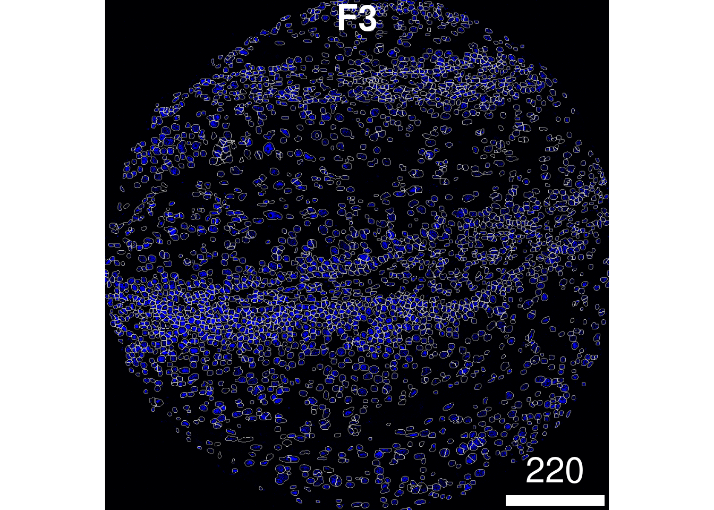
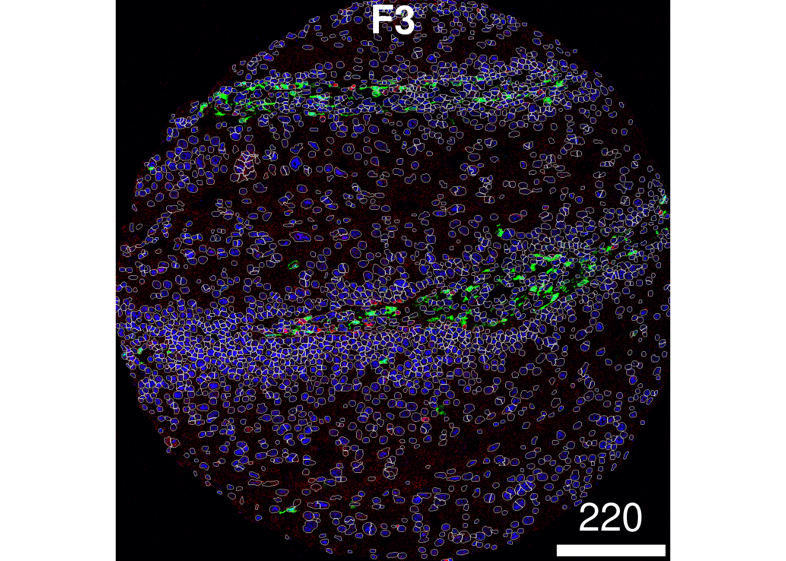

library(cytomapper)
library(ggplot2)
library(simpleSeg)1 Processing
Steps:
- Format of images (TIFFs)
- How to read in data (cytomapper)
- How to segment data (simpleSeg)
- How to segment data (BIDCell?)
- How to read in spot-based data (MoleculeExperiment)
1.1 Reading in images
use_mc <- TRUE
if (use_mc) {
nCores <- max(parallel::detectCores()/2, 1)
} else {
nCores <- 2
}
BPPARAM <- simpleSeg:::generateBPParam(nCores)
theme_set(theme_classic())Once the spicyWorkflow package is installed, these images will be located within the spicyWorkflow folder where the spicyWorkflow package is installed, under inst/extdata/images. Here we use loadImages() from the cytomapper package to load all the tiff images into a CytoImageList object and store the images as h5 file on-disk in a temporary directory using the h5FilesPath = HDF5Array::getHDF5DumpDir() parameter.
We will also assign the metadata columns of the CytoImageList object using the mcols() function.
pathToImages <- SpatialDatasets::Ferguson_Images()see ?SpatialDatasets and browseVignettes('SpatialDatasets') for documentationloading from cachetmp <- tempfile()
unzip(pathToImages, exdir = tmp)
# Store images in a CytoImageList on_disk as h5 files to save memory.
images <- cytomapper::loadImages(
tmp,
single_channel = TRUE,
on_disk = TRUE,
h5FilesPath = HDF5Array::getHDF5DumpDir(),
BPPARAM = BPPARAM
)
mcols(images) <- S4Vectors::DataFrame(imageID = names(images))As we’re reading the image channels directly from the names of the TIFF image, often these channel names will need to be cleaned for ease of downstream processing.
The channel names can be accessed from the CytoImageList object using the channelNames() function.
cn <- channelNames(images) # Read in channel names
head(cn)[1] "139La_139La_panCK.ome" "141Pr_141Pr_CD20.ome"
[3] "142Nd_142Nd_HH3.ome" "143Nd_143Nd_CD45RA.ome"
[5] "146Nd_146Nd_CD8a.ome" "147Sm_147Sm_podoplanin.ome"cn <- sub(".*_", "", cn) # Remove preceding letters
cn <- sub(".ome", "", cn) # Remove the .ome
head(cn)[1] "panCK" "CD20" "HH3" "CD45RA" "CD8a"
[6] "podoplanin"channelNames(images) <- cn # Reassign channel namesSimilarly, the image names will be taken from the folder name containing the individual TIFF images for each channel. These will often also need to be cleaned.
head(names(images))[1] "ROI001_ROI 01_F3_SP16-001550_1E" "ROI002_ROI 02_F4_SP16-001550_1E"
[3] "ROI003_ROI 03_F5_SP16-001550_1E" "ROI005_ROI 05_G4_SP17-002069_1F"
[5] "ROI006_ROI 06_G5_SP17-002069_1F" "ROI007_ROI 07_G6_SP17-005715_1B"nam <- stringr::str_split_fixed(names(images), "_", n = 4)[, 3]
head(nam)[1] "F3" "F4" "F5" "G4" "G5" "G6"names(images) <- nam # Reassigning image names
mcols(images)[["imageID"]] <- nam # Reassigning image names1.2 simpleSeg
If your images are stored in a list or CytoImageList they can be segmented with a simple call to simpleSeg(). To summarise, simpleSeg() is an R implementation of a simple segmentation technique which traces out the nuclei using a specified channel using nucleus then dilates around the traced nuclei by a specified amount using discSize. The nucleus can be traced out using either one specified channel, or by using the principal components of all channels most correlated to the specified nuclear channel by setting pca = TRUE.
In the particular example below, we have asked simpleSeg to do the following:
By setting nucleus = c("HH3"), we’ve asked simpleSeg to trace out the nuclei signal in the images using the HH3 channel. By setting pca = TRUE, simpleSeg segments out the nuclei mask using a principal component analysis of all channels and using the principal components most aligned with the nuclei channel, in this case, HH3. By setting cellBody = "dilate", simpleSeg uses a dilation strategy of segmentation, expanding out from the nucleus by a specified discSize. By setting discSize = 3, simpleSeg dilates out from the nucleus by 3 pixels. By setting sizeSelection = 20, simpleSeg ensures that only cells with a size greater than 20 pixels will be used. By setting transform = "sqrt", simpleSeg square root transforms each of the channels prior to segmentation. By setting tissue = c("panCK", "CD45", "HH3"), we specify a tissue mask which simpleSeg uses, filtering out all background noise outside the tissue mask. This is important as these are tumour cores, wand hence circular, so we’d want to ignore background noise which happens outside of the tumour core.
There are many other parameters that can be specified in simpleSeg (smooth, watershed, tolerance, and ext), and we encourage the user to select the best parameters which suit their biological context.
masks <- simpleSeg(images,
nucleus = c("HH3"),
pca = TRUE,
cellBody = "dilate",
discSize = 3,
sizeSelection = 20,
transform = "sqrt",
tissue = c("panCK", "CD45", "HH3"),
cores = nCores
)1.2.1 Visualise separation
The display and colorLabels functions in EBImage make it very easy to examine the performance of the cell segmentation. The great thing about display is that if used in an interactive session it is very easy to zoom in and out of the image.
EBImage::display(colorLabels(masks[[1]]))
1.2.2 Visualise outlines
The plotPixels function in cytomapper makes it easy to overlay the mask on top of the nucleus intensity marker to see how well our segmentation process has performed. Here we can see that the segmentation appears to be performing reasonably.
If you see over or under-segmentation of your images, discSize is a key parameter in simpleSeg() for optimising the size of the dilation disc after segmenting out the nuclei.
plotPixels(image = images["F3"],
mask = masks["F3"],
img_id = "imageID",
colour_by = c("HH3"),
display = "single",
colour = list(HH3 = c("black","blue")),
legend = NULL,
bcg = list(
HH3 = c(1, 1, 2)
))
If you wish to visualise multiple markers instead of just the HH3 marker and see how the segmentation mask performs, this can also be done. Here, we can see that our segmentation mask has done a good job of capturing the CD31 signal, but perhaps not such a good job of capturing the FXIIIA signal, which often lies outside of our dilated nuclear mask. This could suggest that we might need to increase the discSize or other parameters of simpleSeg.
plotPixels(image = images["F3"],
mask = masks["F3"],
img_id = "imageID",
colour_by = c("HH3", "CD31", "FX111A"),
display = "single",
colour = list(HH3 = c("black","blue"),
CD31 = c("black", "red"),
FX111A = c("black", "green") ),
legend = NULL,
bcg = list(
HH3 = c(1, 1, 2),
CD31 = c(0, 1, 2),
FX111A = c(0, 1, 1.5)
))
In particular, the cellBody and watershed parameters can strongly influence the way cells are segmented using simpleSeg(). We’ve provided further details on how the user may specify cell body identification and watershedding in the tables below.
| Method | Description | |
|---|---|---|
| “distance” | Performs watershedding on a distance map of the thresholded nuclei signal. With a pixels distance being defined as the distance from the closest background signal. | |
| “intensity” | Performs watershedding using the intensity of the nuclei marker. | |
| “combine” | Combines the previous two methods by multiplying the distance map by the nuclei marker intensity. |
| Method | Description | |
|---|---|---|
| “dilation” | Dilates the nuclei by an amount defined by the user. The size of the dilatation in pixels may be specified with the discDize argument. |
|
| “discModel” | Uses all the markers to predict the presence of dilated ‘discs’ around the nuclei. The model therefore learns which markers are typically present in the cell cytoplasm and generates a mask based on this. | |
| “marker” | The user may specify one or multiple dedicated cytoplasm markers to predict the cytoplasm. This can be done using cellBody = "marker name"/"index" |
|
| “None” | The nuclei mask is returned directly. |
1.3 BIDCell
1.4 Visual comparison of segmentations
plotPixels can plot multiple images <– use this to visualise multiple images at once after you have BIDCell ready.
1.5 Summarise cell features
In order to characterise the phenotypes of each of the segmented cells, measureObjects() from cytomapper will calculate the average intensity of each channel within each cell as well as a few morphological features. By default, the measureObjects() function will return a SingleCellExperiment object, where the channel intensities are stored in the counts assay and the spatial location of each cell is stored in colData in the m.cx and m.cy columns.
However, you can also specify measureObjects() to return a SpatialExperiment object by specifying return_as = "spe". As a SpatialExperiment object, the spatial location of each cell is stored in the spatialCoords slot, as m.cx and m.cy, which simplifies plotting. In this demonstration, we will return a SpatialExperiment object.
# Summarise the expression of each marker in each cell
cells <- cytomapper::measureObjects(masks,
images,
img_id = "imageID",
return_as = "spe",
BPPARAM = BPPARAM)
spatialCoordsNames(cells) <- c("x", "y")1.6 sessionInfo
sessionInfo()R version 4.4.1 (2024-06-14)
Platform: x86_64-pc-linux-gnu
Running under: Debian GNU/Linux 12 (bookworm)
Matrix products: default
BLAS: /usr/lib/x86_64-linux-gnu/openblas-pthread/libblas.so.3
LAPACK: /usr/lib/x86_64-linux-gnu/openblas-pthread/libopenblasp-r0.3.21.so; LAPACK version 3.11.0
locale:
[1] LC_CTYPE=C.UTF-8 LC_NUMERIC=C LC_TIME=C.UTF-8
[4] LC_COLLATE=C.UTF-8 LC_MONETARY=C.UTF-8 LC_MESSAGES=C.UTF-8
[7] LC_PAPER=C.UTF-8 LC_NAME=C LC_ADDRESS=C
[10] LC_TELEPHONE=C LC_MEASUREMENT=C.UTF-8 LC_IDENTIFICATION=C
time zone: Australia/Sydney
tzcode source: system (glibc)
attached base packages:
[1] stats4 stats graphics grDevices utils datasets methods
[8] base
other attached packages:
[1] SpatialDatasets_1.4.0 SpatialExperiment_1.16.0
[3] ExperimentHub_2.14.0 AnnotationHub_3.14.0
[5] BiocFileCache_2.14.0 dbplyr_2.5.0
[7] simpleSeg_1.8.0 ggplot2_3.5.1
[9] cytomapper_1.18.0 SingleCellExperiment_1.28.1
[11] SummarizedExperiment_1.36.0 Biobase_2.66.0
[13] GenomicRanges_1.58.0 GenomeInfoDb_1.42.0
[15] IRanges_2.40.0 S4Vectors_0.44.0
[17] BiocGenerics_0.52.0 MatrixGenerics_1.18.0
[19] matrixStats_1.4.1 EBImage_4.48.0
loaded via a namespace (and not attached):
[1] DBI_1.2.3 bitops_1.0-9 deldir_2.0-4
[4] gridExtra_2.3 rlang_1.1.4 magrittr_2.0.3
[7] svgPanZoom_0.3.4 shinydashboard_0.7.2 RSQLite_2.3.7
[10] compiler_4.4.1 spatstat.geom_3.3-3 png_0.1-8
[13] systemfonts_1.1.0 fftwtools_0.9-11 vctrs_0.6.5
[16] stringr_1.5.1 pkgconfig_2.0.3 crayon_1.5.3
[19] fastmap_1.2.0 magick_2.8.5 XVector_0.46.0
[22] utf8_1.2.4 promises_1.3.0 rmarkdown_2.29
[25] UCSC.utils_1.2.0 ggbeeswarm_0.7.2 purrr_1.0.2
[28] bit_4.5.0 xfun_0.49 cachem_1.1.0
[31] zlibbioc_1.52.0 jsonlite_1.8.9 blob_1.2.4
[34] later_1.3.2 rhdf5filters_1.18.0 DelayedArray_0.32.0
[37] spatstat.utils_3.1-1 Rhdf5lib_1.28.0 BiocParallel_1.40.0
[40] jpeg_0.1-10 tiff_0.1-12 terra_1.7-83
[43] parallel_4.4.1 R6_2.5.1 stringi_1.8.4
[46] RColorBrewer_1.1-3 spatstat.data_3.1-2 spatstat.univar_3.1-1
[49] Rcpp_1.0.13-1 knitr_1.49 httpuv_1.6.15
[52] Matrix_1.7-0 nnls_1.6 tidyselect_1.2.1
[55] yaml_2.3.10 rstudioapi_0.17.1 abind_1.4-8
[58] viridis_0.6.5 codetools_0.2-20 curl_6.0.0
[61] lattice_0.22-6 tibble_3.2.1 KEGGREST_1.46.0
[64] shiny_1.9.1 withr_3.0.2 evaluate_1.0.1
[67] polyclip_1.10-7 Biostrings_2.74.0 filelock_1.0.3
[70] BiocManager_1.30.25 pillar_1.9.0 generics_0.1.3
[73] sp_2.1-4 RCurl_1.98-1.16 BiocVersion_3.20.0
[76] munsell_0.5.1 scales_1.3.0 xtable_1.8-4
[79] glue_1.8.0 tools_4.4.1 locfit_1.5-9.10
[82] rhdf5_2.50.0 grid_4.4.1 AnnotationDbi_1.68.0
[85] colorspace_2.1-1 GenomeInfoDbData_1.2.13 raster_3.6-30
[88] beeswarm_0.4.0 HDF5Array_1.34.0 vipor_0.4.7
[91] cli_3.6.3 rappdirs_0.3.3 fansi_1.0.6
[94] S4Arrays_1.6.0 viridisLite_0.4.2 svglite_2.1.3
[97] dplyr_1.1.4 gtable_0.3.6 digest_0.6.37
[100] SparseArray_1.6.0 rjson_0.2.23 htmlwidgets_1.6.4
[103] memoise_2.0.1 htmltools_0.5.8.1 lifecycle_1.0.4
[106] httr_1.4.7 mime_0.12 bit64_4.5.2